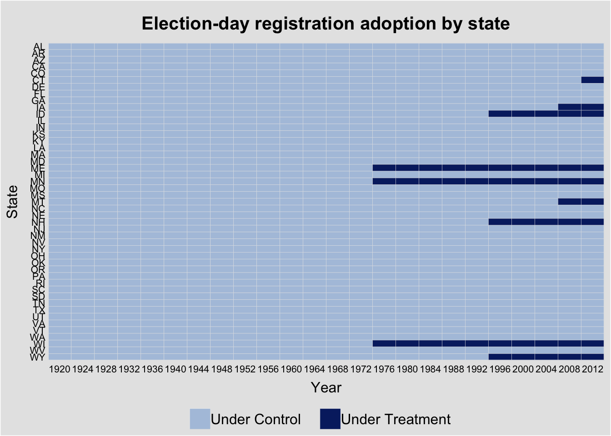
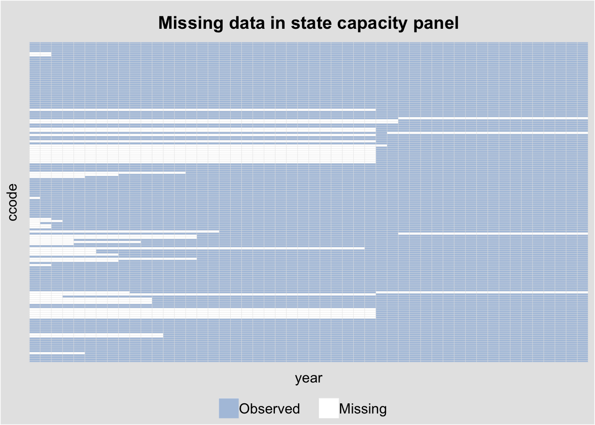
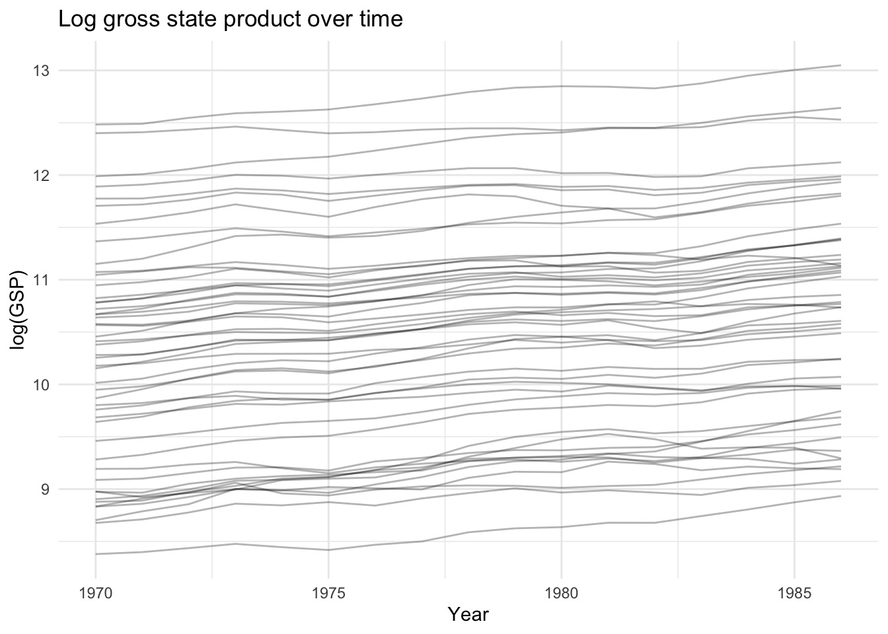
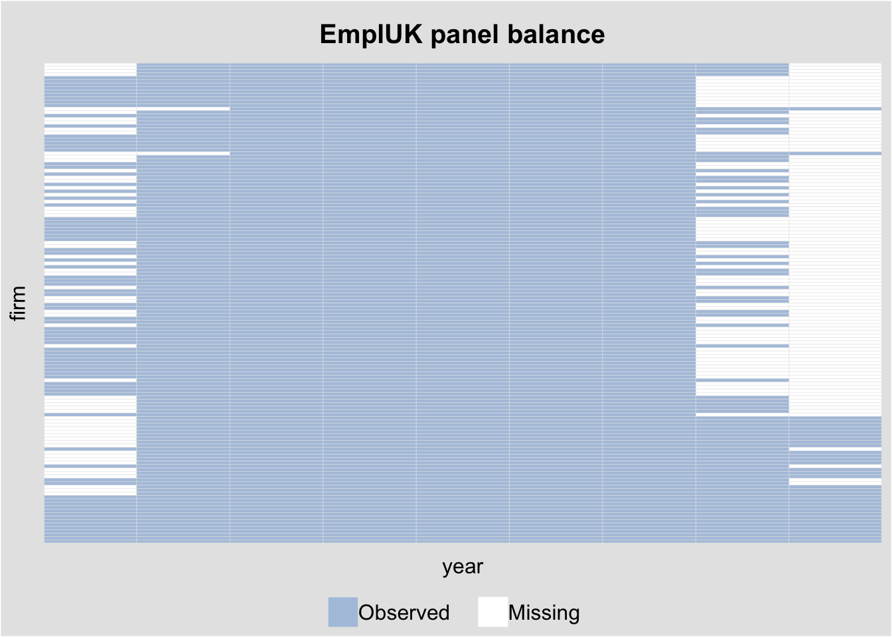

library(ggplot2)
library(plm)
library(panelView)
library(fixest)
library(sandwich)
library(lmtest)
library(estimatr)12. Panel Data
Pooled, between, and within estimators; difference-in-differences; dynamic panels
This chapter covers panel data methods: pooled OLS, the between and within (fixed effects) estimators, difference-in-differences, clustering, and dynamic panel GMM. We use the plm package for panel estimation, panelView for visualization, and fixest for fast fixed effects with flexible standard errors.
Questions this chapter answers:
- How do
panelViewandggplothelp visualize treatment patterns, missingness, and outcome dynamics? - What are the pooled, between, and within estimators — and when is each consistent?
- How does difference-in-differences identify causal effects under parallel trends?
- How do Arellano-Bond and system GMM handle dynamic panels with lagged dependent variables?
1 Visualizing panel structure with panelView
Before estimating anything, it pays to look at your panel. The panelView package visualizes treatment patterns, missingness, and outcome dynamics.
# Load the built-in datasets
data(panelView)1.1 Treatment status plots
The turnout dataset tracks U.S. state voter turnout and election-day registration (EDR) policy adoption—a classic staggered treatment design (see the TWFE bias discussion for the problem under staggered adoption).
panelview(turnout ~ policy_edr + policy_mail_in + policy_motor,
data = turnout, index = c("abb", "year"),
xlab = "Year", ylab = "State",
main = "Election-day registration adoption by state")Warning in fortify(data, ...): Arguments in `...` must be used.
✖ Problematic argument:
• position = "identity"
ℹ Did you misspell an argument name?Warning: Using `size` aesthetic for lines was deprecated in ggplot2 3.4.0.
ℹ Please use `linewidth` instead.
ℹ The deprecated feature was likely used in the panelView package.
Please report the issue to the authors.Warning: In `margin()`, the argument `t` should have length 1, not length 4.
ℹ Argument get(s) truncated to length 1.Warning: The `size` argument of `element_rect()` is deprecated as of ggplot2 3.4.0.
ℹ Please use the `linewidth` argument instead.
ℹ The deprecated feature was likely used in the panelView package.
Please report the issue to the authors.
Sorting by treatment timing reveals the staggered adoption pattern:
panelview(turnout ~ policy_edr + policy_mail_in + policy_motor,
data = turnout, index = c("abb", "year"),
by.timing = TRUE,
xlab = "Year", ylab = "State",
main = "EDR adoption sorted by timing")Warning in fortify(data, ...): Arguments in `...` must be used.
✖ Problematic argument:
• position = "identity"
ℹ Did you misspell an argument name?Warning: In `margin()`, the argument `t` should have length 1, not length 4.
ℹ Argument get(s) truncated to length 1.
1.2 Missing data plots
The capacity dataset (country-level state capacity) has substantial missingness. panelView reveals the pattern:
panelview(Capacity ~ demo + lngdp + lnpop,
data = capacity, index = c("ccode", "year"),
type = "miss", axis.lab = "off",
main = "Missing data in state capacity panel")Warning in fortify(data, ...): Arguments in `...` must be used.
✖ Problematic argument:
• position = "identity"
ℹ Did you misspell an argument name?Warning: In `margin()`, the argument `t` should have length 1, not length 4.
ℹ Argument get(s) truncated to length 1.
1.3 Outcome dynamics
We can also plot the outcome variable over time, colored by treatment status:
panelview(turnout ~ policy_edr,
data = turnout, index = c("abb", "year"),
type = "outcome",
main = "Voter turnout by EDR status",
ylab = "Turnout (%)", xlab = "Year")
2 Panel data basics: the Produc dataset
We use the Produc dataset from the plm package: 48 U.S. states observed from 1970–1986, with gross state product, public capital, private capital, employment, and unemployment.
data("Produc", package = "plm")
cat("States:", length(unique(Produc$state)),
" Years:", min(Produc$year), "-", max(Produc$year),
" Obs:", nrow(Produc), "\n")States: 48 Years: 1970 - 1986 Obs: 816 head(Produc[, c("state", "year", "gsp", "pcap", "emp", "unemp")]) state year gsp pcap emp unemp
1 ALABAMA 1970 28418 15032.67 1010.5 4.7
2 ALABAMA 1971 29375 15501.94 1021.9 5.2
3 ALABAMA 1972 31303 15972.41 1072.3 4.7
4 ALABAMA 1973 33430 16406.26 1135.5 3.9
5 ALABAMA 1974 33749 16762.67 1169.8 5.5
6 ALABAMA 1975 33604 17316.26 1155.4 7.7We model log gross state product as a function of log public capital, log private capital, log employment, and unemployment rate:
\[\ln(\text{gsp})_{it} = \beta_1 \ln(\text{pcap})_{it} + \beta_2 \ln(\text{pc})_{it} + \beta_3 \ln(\text{emp})_{it} + \beta_4 \text{unemp}_{it} + \alpha_i + \varepsilon_{it}\]
The question is whether \(\alpha_i\) (the state-specific intercept) is correlated with the regressors.
2.1 Visualizing the panel
# Log GSP over time by state
ggplot(Produc, aes(x = year, y = log(gsp), group = state)) +
geom_line(alpha = 0.3) +
labs(title = "Log gross state product over time",
x = "Year", y = "log(GSP)") +
theme_minimal()
3 Pooled OLS
Pooled OLS ignores the panel structure entirely—it treats all \(NT\) observations as independent:
pooled <- plm(log(gsp) ~ log(pcap) + log(pc) + log(emp) + unemp,
data = Produc, index = c("state", "year"),
model = "pooling")
summary(pooled)Pooling Model
Call:
plm(formula = log(gsp) ~ log(pcap) + log(pc) + log(emp) + unemp,
data = Produc, model = "pooling", index = c("state", "year"))
Balanced Panel: n = 48, T = 17, N = 816
Residuals:
Min. 1st Qu. Median 3rd Qu. Max.
-0.23176215 -0.06103699 -0.00010248 0.05085197 0.35111348
Coefficients:
Estimate Std. Error t-value Pr(>|t|)
(Intercept) 1.6433023 0.0575873 28.5359 < 2.2e-16 ***
log(pcap) 0.1550070 0.0171538 9.0363 < 2.2e-16 ***
log(pc) 0.3091902 0.0102720 30.1003 < 2.2e-16 ***
log(emp) 0.5939349 0.0137475 43.2032 < 2.2e-16 ***
unemp -0.0067330 0.0014164 -4.7537 2.363e-06 ***
---
Signif. codes: 0 '***' 0.001 '**' 0.01 '*' 0.05 '.' 0.1 ' ' 1
Total Sum of Squares: 849.81
Residual Sum of Squares: 6.2942
R-Squared: 0.99259
Adj. R-Squared: 0.99256
F-statistic: 27171.7 on 4 and 811 DF, p-value: < 2.22e-16Pooled OLS is consistent only if the unobserved state effects \(\alpha_i\) are uncorrelated with all regressors. If wealthier states invest more in public capital (likely), pooled OLS is biased.
4 The between estimator
The between estimator uses only cross-sectional variation—it regresses group means \(\bar{y}_i\) on \(\bar{x}_i\):
between_fit <- plm(log(gsp) ~ log(pcap) + log(pc) + log(emp) + unemp,
data = Produc, index = c("state", "year"),
model = "between")
summary(between_fit)Oneway (individual) effect Between Model
Call:
plm(formula = log(gsp) ~ log(pcap) + log(pc) + log(emp) + unemp,
data = Produc, model = "between", index = c("state", "year"))
Balanced Panel: n = 48, T = 17, N = 816
Observations used in estimation: 48
Residuals:
Min. 1st Qu. Median 3rd Qu. Max.
-0.1573844 -0.0581566 -0.0055724 0.0461581 0.2176471
Coefficients:
Estimate Std. Error t-value Pr(>|t|)
(Intercept) 1.5894444 0.2329796 6.8222 2.329e-08 ***
log(pcap) 0.1793651 0.0719719 2.4922 0.01663 *
log(pc) 0.3019542 0.0418215 7.2201 6.187e-09 ***
log(emp) 0.5761274 0.0563746 10.2196 4.446e-13 ***
unemp -0.0038903 0.0099084 -0.3926 0.69653
---
Signif. codes: 0 '***' 0.001 '**' 0.01 '*' 0.05 '.' 0.1 ' ' 1
Total Sum of Squares: 48.875
Residual Sum of Squares: 0.2977
R-Squared: 0.99391
Adj. R-Squared: 0.99334
F-statistic: 1754.11 on 4 and 43 DF, p-value: < 2.22e-16The between estimator discards all within-state time variation. It is consistent only under the random effects assumption (\(\alpha_i \perp X_{it}\)). When that assumption fails, the between estimator is biased.
5 The within (fixed effects) estimator
The within estimator removes \(\alpha_i\) by demeaning each variable within each state:
\[(\ln\text{gsp}_{it} - \overline{\ln\text{gsp}}_i) = \beta'(x_{it} - \bar{x}_i) + (\varepsilon_{it} - \bar{\varepsilon}_i) \tag{1}\]
Definition 1 (Within (Fixed Effects) Estimator) The within estimator demeans all variables within each unit: \((y_{it} - \bar{y}_i) = \beta'(x_{it} - \bar{x}_i) + (\varepsilon_{it} - \bar\varepsilon_i)\). It is consistent when \(\mathbb{E}[\varepsilon_{it}|X_{i1}, \ldots, X_{iT}, \alpha_i] = 0\), even if \(\alpha_i\) is correlated with \(X_{it}\).
NoteWithin Eliminates Time-Invariant Confounders
The within estimator removes all time-invariant unit characteristics \(\alpha_i\) — both observed and unobserved. This eliminates omitted variable bias from time-invariant confounders, but it also prevents estimating effects of time-invariant regressors (e.g., region, ethnicity). Use CRE/Mundlak (Chapter 13) to recover these.
within_fit <- plm(log(gsp) ~ log(pcap) + log(pc) + log(emp) + unemp,
data = Produc, index = c("state", "year"),
model = "within")
summary(within_fit)Oneway (individual) effect Within Model
Call:
plm(formula = log(gsp) ~ log(pcap) + log(pc) + log(emp) + unemp,
data = Produc, model = "within", index = c("state", "year"))
Balanced Panel: n = 48, T = 17, N = 816
Residuals:
Min. 1st Qu. Median 3rd Qu. Max.
-0.120456 -0.023741 -0.002041 0.018144 0.174718
Coefficients:
Estimate Std. Error t-value Pr(>|t|)
log(pcap) -0.02614965 0.02900158 -0.9017 0.3675
log(pc) 0.29200693 0.02511967 11.6246 < 2.2e-16 ***
log(emp) 0.76815947 0.03009174 25.5273 < 2.2e-16 ***
unemp -0.00529774 0.00098873 -5.3582 1.114e-07 ***
---
Signif. codes: 0 '***' 0.001 '**' 0.01 '*' 0.05 '.' 0.1 ' ' 1
Total Sum of Squares: 18.941
Residual Sum of Squares: 1.1112
R-Squared: 0.94134
Adj. R-Squared: 0.93742
F-statistic: 3064.81 on 4 and 764 DF, p-value: < 2.22e-165.1 Fixed effects by hand
By the FWL theorem, the within estimator is equivalent to including dummy variables for each state (LSDV), which is equivalent to the Frisch–Waugh–Lovell projection:
# LSDV approach: include state dummies
lsdv <- lm(log(gsp) ~ log(pcap) + log(pc) + log(emp) + unemp + factor(state),
data = Produc)
# Compare slope coefficients
cat("plm within: ", round(coef(within_fit), 4), "\n")plm within: -0.0261 0.292 0.7682 -0.0053 cat("LSDV slopes: ", round(coef(lsdv)[2:5], 4), "\n")LSDV slopes: -0.0261 0.292 0.7682 -0.0053 5.2 Manual demeaning
# Demean each variable within state
demean <- function(x, group) x - ave(x, group)
Produc$lgsp_dm <- demean(log(Produc$gsp), Produc$state)
Produc$lpcap_dm <- demean(log(Produc$pcap), Produc$state)
Produc$lpc_dm <- demean(log(Produc$pc), Produc$state)
Produc$lemp_dm <- demean(log(Produc$emp), Produc$state)
Produc$unemp_dm <- demean(Produc$unemp, Produc$state)
dm_fit <- lm(lgsp_dm ~ lpcap_dm + lpc_dm + lemp_dm + unemp_dm - 1, data = Produc)
cat("Manual demeaning: ", round(coef(dm_fit), 4), "\n")Manual demeaning: -0.0261 0.292 0.7682 -0.0053 cat("plm within: ", round(coef(within_fit), 4), "\n")plm within: -0.0261 0.292 0.7682 -0.0053 5.3 Comparing estimators
coef_table <- data.frame(
Variable = names(coef(within_fit)),
Pooled = round(coef(pooled)[-1], 4),
Between = round(coef(between_fit)[-1], 4),
Within = round(coef(within_fit), 4)
)
rownames(coef_table) <- NULL
coef_table Variable Pooled Between Within
1 log(pcap) 0.1550 0.1794 -0.0261
2 log(pc) 0.3092 0.3020 0.2920
3 log(emp) 0.5939 0.5761 0.7682
4 unemp -0.0067 -0.0039 -0.0053The pooled and between estimators give a large positive coefficient on public capital (pcap). The within estimator—which controls for unobserved state characteristics—gives a much smaller (or negative) coefficient. This is the classic omitted variable bias story: states with high unobserved productivity invest in more public capital and have higher GSP.
5.4 Variance decomposition
The total variation in a panel decomposes into between-group and within-group components. The pooled estimator is a matrix-weighted average of the between and within estimators:
# Between variation
x_bar <- aggregate(log(pcap) ~ state, data = Produc, mean)$`log(pcap)`
between_var <- var(x_bar)
# Within variation
within_var <- var(demean(log(Produc$pcap), Produc$state))
# Total
total_var <- var(log(Produc$pcap))
cat("Between variance:", round(between_var, 4), "\n")Between variance: 0.8945 cat("Within variance: ", round(within_var, 4), "\n")Within variance: 0.0116 cat("Total variance: ", round(total_var, 4), "\n")Total variance: 0.8885 cat("Between share: ", round(between_var / total_var * 100, 1), "%\n")Between share: 100.7 %When the between share is large (as here), pooled OLS is heavily influenced by cross-sectional differences between states, which may be confounded by omitted variables.
6 Clustering and robust standard errors
Standard errors from pooled OLS or even fixed effects may be wrong if errors are correlated within states (serial correlation) or across states (spatial correlation).
6.1 Cluster-robust standard errors
# Default plm standard errors (assume iid errors)
cat("Default within SE:\n")Default within SE:round(coef(summary(within_fit))[, "Std. Error"], 4)log(pcap) log(pc) log(emp) unemp
0.0290 0.0251 0.0301 0.0010 # Cluster-robust SE (Arellano, 1987)
cat("\nCluster-robust SE (Arellano):\n")
Cluster-robust SE (Arellano):round(sqrt(diag(vcovHC(within_fit, method = "arellano", type = "HC1"))), 4)log(pcap) log(pc) log(emp) unemp
0.0605 0.0619 0.0819 0.0025 # Newey-West SE for serial correlation
cat("\nNewey-West SE (1 lag):\n")
Newey-West SE (1 lag):round(sqrt(diag(vcovNW(within_fit, maxlag = 1))), 4)log(pcap) log(pc) log(emp) unemp
0.0391 0.0376 0.0503 0.0013
WarningAlways Cluster Standard Errors in Panel Data
Standard OLS errors assume independence across observations. In panel data, errors are typically correlated within units (serial correlation). Failing to cluster inflates test statistics by the Moulton factor \(\sqrt{1 + (T-1)\rho}\), which can be substantial.
Using fixest::feols() provides the same estimates with more flexible standard error options:
fe_fixest <- feols(log(gsp) ~ log(pcap) + log(pc) + log(emp) + unemp | state,
data = Produc, panel.id = ~state + year)
# Various SE types
summary(fe_fixest, vcov = "iid")OLS estimation, Dep. Var.: log(gsp)
Observations: 816
Fixed-effects: state: 48
Standard-errors: IID
Estimate Std. Error t value Pr(>|t|)
log(pcap) -0.026150 0.029002 -0.901663 3.6752e-01
log(pc) 0.292007 0.025120 11.624631 < 2.2e-16 ***
log(emp) 0.768159 0.030092 25.527254 < 2.2e-16 ***
unemp -0.005298 0.000989 -5.358151 1.1139e-07 ***
---
Signif. codes: 0 '***' 0.001 '**' 0.01 '*' 0.05 '.' 0.1 ' ' 1
RMSE: 0.036902 Adj. R2: 0.998605
Within R2: 0.941336summary(fe_fixest, vcov = ~state) # cluster by stateOLS estimation, Dep. Var.: log(gsp)
Observations: 816
Fixed-effects: state: 48
Standard-errors: Clustered (state)
Estimate Std. Error t value Pr(>|t|)
log(pcap) -0.026150 0.061115 -0.427878 6.7069e-01
log(pc) 0.292007 0.062550 4.668409 2.5563e-05 ***
log(emp) 0.768159 0.082733 9.284833 3.3204e-12 ***
unemp -0.005298 0.002528 -2.095241 4.1564e-02 *
---
Signif. codes: 0 '***' 0.001 '**' 0.01 '*' 0.05 '.' 0.1 ' ' 1
RMSE: 0.036902 Adj. R2: 0.998605
Within R2: 0.941336# Driscoll-Kraay SE (cross-sectional + serial dependence)
summary(fe_fixest, vcov = "DK")OLS estimation, Dep. Var.: log(gsp)
Observations: 816
Fixed-effects: state: 48
Standard-errors: Driscoll-Kraay (L=2)
Estimate Std. Error t value Pr(>|t|)
log(pcap) -0.026150 0.061260 -0.426864 6.7517e-01
log(pc) 0.292007 0.062641 4.661581 2.6059e-04 ***
log(emp) 0.768159 0.088195 8.709819 1.8097e-07 ***
unemp -0.005298 0.001588 -3.337117 4.1793e-03 **
---
Signif. codes: 0 '***' 0.001 '**' 0.01 '*' 0.05 '.' 0.1 ' ' 1
RMSE: 0.036902 Adj. R2: 0.998605
Within R2: 0.9413366.2 The Moulton factor
Why do clustered SEs matter? When errors are correlated within clusters, standard SEs are too small by a factor that grows with cluster size and intra-cluster correlation \(\rho\):
\[\text{Moulton factor} \approx \sqrt{1 + (n_g - 1)\rho}\]
# Estimate intra-state error correlation from within-model residuals
e_within <- residuals(within_fit)
pdat <- pdata.frame(Produc, index = c("state", "year"))
state_ids <- as.numeric(pdat$state)
# Compute average within-state residual correlation
states <- unique(state_ids)
cors <- numeric(length(states))
for (j in seq_along(states)) {
e_j <- e_within[state_ids == states[j]]
if (length(e_j) > 1) {
pair_cors <- cor(e_j[-length(e_j)], e_j[-1])
cors[j] <- pair_cors
}
}
rho <- mean(cors, na.rm = TRUE)
T_per_state <- nrow(Produc) / length(unique(Produc$state))
moulton <- sqrt(1 + (T_per_state - 1) * rho)
cat("Intra-state correlation (rho):", round(rho, 3), "\n")Intra-state correlation (rho): 0.697 cat("Average T per state:", T_per_state, "\n")Average T per state: 17 cat("Moulton factor:", round(moulton, 2), "\n")Moulton factor: 3.49 Standard errors should be inflated by roughly this factor when clustering is ignored.
7 Difference-in-differences
Difference-in-differences (DiD) is a panel method for estimating causal effects when treatment is assigned to some units at some time. The canonical \(2 \times 2\) DiD model is:
\[Y_{it} = \alpha + \beta \cdot \text{Group}_i + \gamma \cdot \text{Post}_t + \delta \cdot (\text{Group}_i \times \text{Post}_t) + \varepsilon_{it} \tag{2}\]
Theorem 1 (Difference-in-Differences) The DiD estimator \(\hat\delta = (\bar{Y}_{1,\text{post}} - \bar{Y}_{1,\text{pre}}) - (\bar{Y}_{0,\text{post}} - \bar{Y}_{0,\text{pre}})\) identifies the ATT under the parallel trends assumption: absent treatment, treated and control groups would have followed the same trajectory.
where \(\delta\) is the treatment effect, identified under the parallel trends assumption.
7.1 Simulated DiD example
set.seed(42)
N <- 100 # units
T_periods <- 10
treat_time <- 6 # treatment starts at t = 6
treated_units <- 1:(N/2)
did_data <- expand.grid(unit = 1:N, time = 1:T_periods)
did_data$treated <- as.integer(did_data$unit %in% treated_units)
did_data$post <- as.integer(did_data$time >= treat_time)
# Generate outcomes with parallel pre-trends
alpha_i <- rep(rnorm(N, sd = 2), each = T_periods) # unit effects
gamma_t <- rep(0.3 * (1:T_periods), times = N) # common trend
delta_true <- 1.5
did_data$y <- 5 + alpha_i + gamma_t +
delta_true * did_data$treated * did_data$post +
rnorm(N * T_periods, sd = 1)# Group means over time
group_means <- aggregate(y ~ time + treated, data = did_data, mean)
group_means$group <- factor(group_means$treated, labels = c("Control", "Treated"))
ggplot(group_means, aes(x = time, y = y, color = group)) +
geom_line(linewidth = 1) +
geom_point(size = 2) +
geom_vline(xintercept = treat_time - 0.5, linetype = "dashed") +
annotate("text", x = treat_time - 0.3, y = max(group_means$y),
label = "Treatment", hjust = 1, size = 3) +
labs(title = "Difference-in-differences",
x = "Time", y = "Outcome", color = "Group") +
theme_minimal()
7.2 DiD estimation
# Method 1: OLS with interaction
did_ols <- lm(y ~ treated * post, data = did_data)
cat("DiD coefficient (OLS interaction):", round(coef(did_ols)["treated:post"], 3),
" (true:", delta_true, ")\n")DiD coefficient (OLS interaction): 0.483 (true: 1.5 )# Method 2: Two-way fixed effects (unit + time FE)
did_twfe <- feols(y ~ treated:post | unit + time, data = did_data)
cat("DiD coefficient (TWFE):", round(coef(did_twfe), 3), "\n")DiD coefficient (TWFE): 0.483 # With cluster-robust SEs (cluster on unit)
summary(did_twfe, vcov = ~unit)OLS estimation, Dep. Var.: y
Observations: 1,000
Fixed-effects: unit: 100, time: 10
Standard-errors: Clustered (unit)
Estimate Std. Error t value Pr(>|t|)
treated:post 0.483065 0.245027 1.97148 0.05146 .
---
Signif. codes: 0 '***' 0.001 '**' 0.01 '*' 0.05 '.' 0.1 ' ' 1
RMSE: 2.11024 Adj. R2: 0.237228
Within R2: 0.0032647.3 Visualizing the DiD with panelView
# Treatment pattern
did_data$D <- did_data$treated * did_data$post
panelview(y ~ D, data = did_data, index = c("unit", "time"),
type = "treat",
main = "Treatment pattern in DiD design")Warning in fortify(data, ...): Arguments in `...` must be used.
✖ Problematic argument:
• position = "identity"
ℹ Did you misspell an argument name?Warning: In `margin()`, the argument `t` should have length 1, not length 4.
ℹ Argument get(s) truncated to length 1.
8 Random effects
The random effects (RE) estimator assumes \(\alpha_i \perp X_{it}\) and estimates a GLS model with the composite error \(\nu_{it} = \alpha_i + \varepsilon_{it}\). The RE estimator is a weighted average of the between and within estimators:
\[\hat{\beta}_{RE} = \lambda \hat{\beta}_{W} + (1 - \lambda) \hat{\beta}_{B}\]
where \(\lambda\) depends on the ratio of within to between variance.
re_fit <- plm(log(gsp) ~ log(pcap) + log(pc) + log(emp) + unemp,
data = Produc, index = c("state", "year"),
model = "random")
summary(re_fit)Oneway (individual) effect Random Effect Model
(Swamy-Arora's transformation)
Call:
plm(formula = log(gsp) ~ log(pcap) + log(pc) + log(emp) + unemp,
data = Produc, model = "random", index = c("state", "year"))
Balanced Panel: n = 48, T = 17, N = 816
Effects:
var std.dev share
idiosyncratic 0.001454 0.038137 0.175
individual 0.006838 0.082691 0.825
theta: 0.8888
Residuals:
Min. 1st Qu. Median 3rd Qu. Max.
-0.1067230 -0.0245520 -0.0023694 0.0217333 0.1996307
Coefficients:
Estimate Std. Error z-value Pr(>|z|)
(Intercept) 2.13541100 0.13346149 16.0002 < 2.2e-16 ***
log(pcap) 0.00443859 0.02341732 0.1895 0.8497
log(pc) 0.31054843 0.01980475 15.6805 < 2.2e-16 ***
log(emp) 0.72967053 0.02492022 29.2803 < 2.2e-16 ***
unemp -0.00617247 0.00090728 -6.8033 1.023e-11 ***
---
Signif. codes: 0 '***' 0.001 '**' 0.01 '*' 0.05 '.' 0.1 ' ' 1
Total Sum of Squares: 29.209
Residual Sum of Squares: 1.1879
R-Squared: 0.95933
Adj. R-Squared: 0.95913
Chisq: 19131.1 on 4 DF, p-value: < 2.22e-168.1 Hausman test: FE vs RE
The Hausman test compares FE and RE. Under \(H_0\) (RE is consistent), both estimators are consistent but RE is efficient. Under \(H_1\), only FE is consistent.
phtest(within_fit, re_fit)
Hausman Test
data: log(gsp) ~ log(pcap) + log(pc) + log(emp) + unemp
chisq = 9.5254, df = 4, p-value = 0.04923
alternative hypothesis: one model is inconsistentA small p-value means we reject the RE assumption—the fixed effects are correlated with the regressors, so FE is preferred.
9 Dynamic panels and Arellano–Bond GMM
When the model includes a lagged dependent variable, fixed effects estimation is inconsistent (Nickell bias, \(O(1/T)\)). Arellano and Bond (1991) proposed first-differencing the equation and using lagged levels as instruments:
\[\Delta y_{it} = \rho \Delta y_{it-1} + \Delta x_{it}'\beta + \Delta \varepsilon_{it}\]
Since \(\text{Cov}(y_{is}, \Delta\varepsilon_{it}) = 0\) for \(s \leq t-2\), lagged levels are valid instruments. This creates a growing set of moment conditions—naturally suited to GMM.
9.1 The EmplUK dataset
We use the EmplUK dataset: 140 UK firms observed over 1976–1984, with employment, wages, capital, and output.
data("EmplUK", package = "plm")
cat("Firms:", length(unique(EmplUK$firm)),
" Years:", min(EmplUK$year), "-", max(EmplUK$year),
" Obs:", nrow(EmplUK), "\n")Firms: 140 Years: 1976 - 1984 Obs: 1031 head(EmplUK) firm year sector emp wage capital output
1 1 1977 7 5.041 13.1516 0.5894 95.7072
2 1 1978 7 5.600 12.3018 0.6318 97.3569
3 1 1979 7 5.015 12.8395 0.6771 99.6083
4 1 1980 7 4.715 13.8039 0.6171 100.5501
5 1 1981 7 4.093 14.2897 0.5076 99.5581
6 1 1982 7 3.166 14.8681 0.4229 98.6151# Visualize the panel structure
panelview(emp ~ wage, data = EmplUK,
index = c("firm", "year"),
type = "miss", axis.lab = "off",
main = "EmplUK panel balance")Warning in fortify(data, ...): Arguments in `...` must be used.
✖ Problematic argument:
• position = "identity"
ℹ Did you misspell an argument name?Warning: In `margin()`, the argument `t` should have length 1, not length 4.
ℹ Argument get(s) truncated to length 1.
9.2 Nickell bias: why FE fails with lagged DV
set.seed(123)
N_nick <- 100; T_nick <- 8
rho_true <- 0.5
# Simulate dynamic panel
nick_data <- data.frame()
for (i in 1:N_nick) {
alpha_i <- rnorm(1, sd = 1)
y <- numeric(T_nick)
y[1] <- alpha_i / (1 - rho_true) + rnorm(1)
for (t in 2:T_nick) {
y[t] <- rho_true * y[t-1] + alpha_i + rnorm(1)
}
nick_data <- rbind(nick_data,
data.frame(id = i, time = 1:T_nick, y = y))
}
# FE estimate of rho (biased downward)
nick_data$y_lag <- ave(nick_data$y, nick_data$id,
FUN = function(x) c(NA, x[-length(x)]))
fe_nick <- plm(y ~ y_lag, data = nick_data, index = c("id", "time"),
model = "within", na.action = na.omit)
cat("True rho:", rho_true, "\n")True rho: 0.5 cat("FE estimate:", round(coef(fe_nick), 4), " (Nickell bias)\n")FE estimate: 0.2179 (Nickell bias)cat("Expected bias ~ -1/T =", round(-1/T_nick, 4), "\n")Expected bias ~ -1/T = -0.125 The FE estimator is biased downward by approximately \(-1/T\) when \(T\) is small.
Definition 2 (Nickell Bias) In a dynamic panel \(y_{it} = \rho y_{it-1} + \alpha_i + \varepsilon_{it}\), fixed effects estimation is inconsistent with bias \(\approx -(\rho + 1)/(T - 1)\). This arises because demeaning creates mechanical correlation between \(\tilde{y}_{it-1}\) and \(\tilde\varepsilon_{it}\). The bias is severe when \(T\) is small.
9.3 Arellano–Bond difference GMM
The pgmm() function in plm implements Arellano–Bond (difference GMM) and Blundell–Bond (system GMM).
The formula syntax uses | to separate regressors from GMM instruments:
y ~ regressors | GMM_instruments | standard_instruments# Arellano-Bond: Table 4, Column (b) from Arellano & Bond (1991)
ab_fit <- pgmm(
log(emp) ~ lag(log(emp), 1:2) + lag(log(wage), 0:1)
+ log(capital) + lag(log(output), 0:1)
| lag(log(emp), 2:99),
data = EmplUK,
effect = "twoways",
model = "twosteps",
transformation = "d" # difference GMM
)
summary(ab_fit, robust = TRUE)Twoways effects Two-steps model Difference GMM
Call:
pgmm(formula = log(emp) ~ lag(log(emp), 1:2) + lag(log(wage),
0:1) + log(capital) + lag(log(output), 0:1) | lag(log(emp),
2:99), data = EmplUK, effect = "twoways", model = "twosteps",
transformation = "d")
Unbalanced Panel: n = 140, T = 7-9, N = 1031
Number of Observations Used: 611
Residuals:
Min. 1st Qu. Median Mean 3rd Qu. Max.
-0.6190677 -0.0255683 0.0000000 -0.0001339 0.0332013 0.6410272
Coefficients:
Estimate Std. Error z-value Pr(>|z|)
lag(log(emp), 1:2)1 0.474151 0.185398 2.5575 0.0105437 *
lag(log(emp), 1:2)2 -0.052967 0.051749 -1.0235 0.3060506
lag(log(wage), 0:1)0 -0.513205 0.145565 -3.5256 0.0004225 ***
lag(log(wage), 0:1)1 0.224640 0.141950 1.5825 0.1135279
log(capital) 0.292723 0.062627 4.6741 2.953e-06 ***
lag(log(output), 0:1)0 0.609775 0.156263 3.9022 9.530e-05 ***
lag(log(output), 0:1)1 -0.446373 0.217302 -2.0542 0.0399605 *
---
Signif. codes: 0 '***' 0.001 '**' 0.01 '*' 0.05 '.' 0.1 ' ' 1
Sargan test: chisq(25) = 30.11247 (p-value = 0.22011)
Autocorrelation test (1): normal = -1.53845 (p-value = 0.12394)
Autocorrelation test (2): normal = -0.2796829 (p-value = 0.77972)
Wald test for coefficients: chisq(7) = 142.0353 (p-value = < 2.22e-16)
Wald test for time dummies: chisq(6) = 16.97046 (p-value = 0.0093924)9.4 Diagnostic tests
Two diagnostics are essential for dynamic panel GMM:
- Sargan/Hansen J-test: Are the overidentifying restrictions satisfied?
- AR(2) test: Is there second-order serial correlation in the differenced residuals? (AR(1) is expected due to differencing; AR(2) would invalidate lag-2 instruments.)
# Sargan test of overidentifying restrictions
sargan(ab_fit)
Sargan test
data: log(emp) ~ lag(log(emp), 1:2) + lag(log(wage), 0:1) + log(capital) + ...
chisq = 30.112, df = 25, p-value = 0.2201
alternative hypothesis: overidentifying restrictions not valid# Serial correlation tests
mtest(ab_fit, order = 1) # AR(1): expected to reject
Arellano-Bond autocorrelation test of degree 1
data: log(emp) ~ lag(log(emp), 1:2) + lag(log(wage), 0:1) + log(capital) + ...
normal = -2.4278, p-value = 0.01519
alternative hypothesis: autocorrelation presentmtest(ab_fit, order = 2) # AR(2): should not reject
Arellano-Bond autocorrelation test of degree 2
data: log(emp) ~ lag(log(emp), 1:2) + lag(log(wage), 0:1) + log(capital) + ...
normal = -0.33254, p-value = 0.7395
alternative hypothesis: autocorrelation presentAR(1) in the differenced residuals is expected and mechanical. The key test is AR(2): failing to reject means our instruments (lags 2+) are valid.
9.5 Blundell–Bond system GMM
When the dependent variable is highly persistent (\(\rho\) close to 1), lagged levels become weak instruments for first differences. Blundell and Bond (1998) augment the moment conditions with level equations, using lagged differences as instruments:
# System GMM: use transformation = "ld" (level + difference)
bb_fit <- pgmm(
log(emp) ~ lag(log(emp), 1) + lag(log(wage), 0:1)
+ lag(log(capital), 0:1)
| lag(log(emp), 2:99) + lag(log(wage), 2:99)
+ lag(log(capital), 2:99),
data = EmplUK,
effect = "twoways",
model = "twosteps",
transformation = "ld" # system GMM
)
summary(bb_fit, robust = TRUE)Twoways effects Two-steps model System GMM
Call:
pgmm(formula = log(emp) ~ lag(log(emp), 1) + lag(log(wage), 0:1) +
lag(log(capital), 0:1) | lag(log(emp), 2:99) + lag(log(wage),
2:99) + lag(log(capital), 2:99), data = EmplUK, effect = "twoways",
model = "twosteps", transformation = "ld")
Unbalanced Panel: n = 140, T = 7-9, N = 1031
Number of Observations Used: 1642
Residuals:
Min. 1st Qu. Median Mean 3rd Qu. Max.
-0.7528842 -0.0361094 0.0000000 0.0006606 0.0469500 0.6008115
Coefficients:
Estimate Std. Error z-value Pr(>|z|)
lag(log(emp), 1) 0.932214 0.026859 34.7072 < 2.2e-16 ***
lag(log(wage), 0:1)0 -0.634477 0.118758 -5.3426 9.163e-08 ***
lag(log(wage), 0:1)1 0.494669 0.131783 3.7537 0.0001743 ***
lag(log(capital), 0:1)0 0.485261 0.060427 8.0305 9.705e-16 ***
lag(log(capital), 0:1)1 -0.423223 0.064445 -6.5672 5.127e-11 ***
---
Signif. codes: 0 '***' 0.001 '**' 0.01 '*' 0.05 '.' 0.1 ' ' 1
Sargan test: chisq(100) = 110.7009 (p-value = 0.21828)
Autocorrelation test (1): normal = -6.456154 (p-value = 1.074e-10)
Autocorrelation test (2): normal = -0.259282 (p-value = 0.79542)
Wald test for coefficients: chisq(5) = 11221.9 (p-value = < 2.22e-16)
Wald test for time dummies: chisq(7) = 13.73376 (p-value = 0.056124)sargan(bb_fit)
Sargan test
data: log(emp) ~ lag(log(emp), 1) + lag(log(wage), 0:1) + lag(log(capital), ...
chisq = 110.7, df = 100, p-value = 0.2183
alternative hypothesis: overidentifying restrictions not validmtest(bb_fit, order = 2)
Arellano-Bond autocorrelation test of degree 2
data: log(emp) ~ lag(log(emp), 1) + lag(log(wage), 0:1) + lag(log(capital), ...
normal = -0.26286, p-value = 0.7927
alternative hypothesis: autocorrelation present9.6 Instrument proliferation
A practical concern with pgmm() is that the number of GMM instruments grows quadratically with \(T\). With \(T = 9\) periods, using lag(y, 2:99) generates up to \((T-1)(T-2)/2 = 28\) instruments from a single variable. Too many instruments can overfit the endogenous variable.
The collapse = TRUE option reduces the instrument count:
# Collapsed instrument matrix
ab_collapse <- pgmm(
log(emp) ~ lag(log(emp), 1:2) + lag(log(wage), 0:1)
+ log(capital) + lag(log(output), 0:1)
| lag(log(emp), 2:99),
data = EmplUK,
effect = "twoways",
model = "twosteps",
transformation = "d",
collapse = TRUE
)
summary(ab_collapse, robust = TRUE)Twoways effects Two-steps model Difference GMM
Call:
pgmm(formula = log(emp) ~ lag(log(emp), 1:2) + lag(log(wage),
0:1) + log(capital) + lag(log(output), 0:1) | lag(log(emp),
2:99), data = EmplUK, effect = "twoways", model = "twosteps",
collapse = TRUE, transformation = "d")
Unbalanced Panel: n = 140, T = 7-9, N = 1031
Number of Observations Used: 611
Residuals:
Min. 1st Qu. Median Mean 3rd Qu. Max.
-0.8455637 -0.0326605 0.0000000 -0.0003799 0.0312841 0.7010278
Coefficients:
Estimate Std. Error z-value Pr(>|z|)
lag(log(emp), 1:2)1 0.853895 0.562348 1.5184 0.128902
lag(log(emp), 1:2)2 -0.169886 0.123293 -1.3779 0.168232
lag(log(wage), 0:1)0 -0.533119 0.245948 -2.1676 0.030189 *
lag(log(wage), 0:1)1 0.352516 0.432846 0.8144 0.415408
log(capital) 0.271707 0.089921 3.0216 0.002514 **
lag(log(output), 0:1)0 0.612855 0.242289 2.5294 0.011424 *
lag(log(output), 0:1)1 -0.682550 0.612311 -1.1147 0.264974
---
Signif. codes: 0 '***' 0.001 '**' 0.01 '*' 0.05 '.' 0.1 ' ' 1
Sargan test: chisq(5) = 11.62681 (p-value = 0.040275)
Autocorrelation test (1): normal = -1.290551 (p-value = 0.19686)
Autocorrelation test (2): normal = 0.4482577 (p-value = 0.65397)
Wald test for coefficients: chisq(7) = 134.788 (p-value = < 2.22e-16)
Wald test for time dummies: chisq(6) = 11.91947 (p-value = 0.06379)# Compare coefficient on lag(log(emp), 1) across specifications
cat("Full instruments: ", round(coef(ab_fit)["lag(log(emp), 1:2)1"], 4), "\n")Full instruments: 0.4742 cat("Collapsed instruments:", round(coef(ab_collapse)["lag(log(emp), 1:2)1"], 4), "\n")Collapsed instruments: 0.8539 10 Panel estimators as moment conditions
Every panel estimator we’ve covered is a GMM estimator with specific moment conditions:
| Estimator | Moment condition | Instruments |
|---|---|---|
| Pooled OLS | \(\mathbb{E}[X_{it} \varepsilon_{it}] = 0\) | \(X_{it}\) |
| Within (FE) | \(\mathbb{E}[\tilde{X}_{it} \tilde{\varepsilon}_{it}] = 0\) | Demeaned \(\tilde{X}_{it}\) |
| Between | \(\mathbb{E}[\bar{X}_i \bar{\varepsilon}_i] = 0\) | Group means \(\bar{X}_i\) |
| Random effects | \(\mathbb{E}[X_{it} \nu_{it}] = 0\), \(\mathbb{E}[\bar{X}_i \nu_{it}] = 0\) | Both \(X_{it}\) and \(\bar{X}_i\) |
| Arellano–Bond | \(\mathbb{E}[y_{is} \Delta\varepsilon_{it}] = 0,\ s \leq t-2\) | Lagged levels |
| Blundell–Bond | Above + \(\mathbb{E}[\Delta y_{is} \varepsilon_{it}] = 0,\ s \leq t-1\) | + Lagged differences |
The progression from OLS to system GMM mirrors the course arc: each step adds moment conditions and addresses a new identification challenge.
11 Choosing a panel estimator
Panel Estimator Decision Guide:
================================
1. Is alpha_i correlated with X_it?
- No --> Random Effects (more efficient)
- Yes --> Fixed Effects
- Unsure --> Run Hausman test
2. Do you have a lagged dependent variable?
- No --> Standard FE is fine
- Yes --> FE is biased (Nickell bias)
--> Use Arellano-Bond or System GMM
3. Is the DV highly persistent (rho near 1)?
- No --> Arellano-Bond (difference GMM)
- Yes --> Blundell-Bond (system GMM)
4. Diagnostics:
- Always report cluster-robust SEs
- For GMM: check Sargan test + AR(2) test
- Watch for instrument proliferation12 Summary
- panelView visualizes treatment adoption, missingness, and outcome dynamics before estimation.
- Pooled OLS ignores unit effects; between uses only cross-sectional variation; within (FE) uses only time variation within units.
- The within estimator removes time-invariant confounders but cannot estimate effects of time-invariant regressors.
- Cluster-robust SEs (Arellano, Newey–West, Driscoll–Kraay) account for within-cluster error dependence. The Moulton factor quantifies the standard error inflation from ignoring clustering.
- Mundlak’s CRE gives FE slopes while retaining the ability to estimate effects of time-invariant variables.
- Hausman test compares FE and RE; rejection means \(\alpha_i\) is correlated with \(X_{it}\).
- Arellano–Bond and Blundell–Bond use GMM for dynamic panels with lagged dependent variables, overcoming Nickell bias.
- Diagnostic tests: Sargan/Hansen J-test for overidentifying restrictions; AR(2) test for instrument validity.
- All panel estimators are special cases of GMM with different moment conditions.